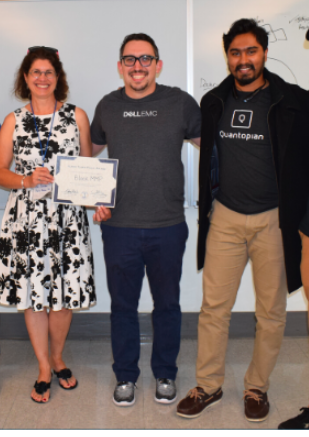

About
Each day individuals who are prescribed methadone for opioid use disorder run the risk of not
receiving their daily methadone dose due to the logistical limitations of each administration site.
Most controlled substances, including Suboxone, can be looked up other centralized electronic health
record systems. However, unlike other Schedule 2 drugs, methadone is not filled via a pharmacy and
therefore not tracked within such platforms. This leaves an individual who requires their methadone
dose outside the business hours of their clinics at a loss. As records between healthcare providers
about methadone administration is not available from site to site, they must rely on archaic medical
process-either retrieving their dosage information verbally via phone or in writing by fax.
Oftentimes this proves futile due to multiple logistical challenges including a methadone clinic not
being open, an unanswered phone, a fax machine malfunction, or an incorrect phone number.
Without a confirmed methadone dose, the medical provider is not legally allowed to give a patient
their daily methadone dose. When a patient does not receive their usual methadone dose, they will go
into severe withdrawal, through no fault of their own. This frequently leads to individuals leaving
care against medical advice (AMA) to treat their withdrawal symptoms via illicitly obtained opioids.
BlockMMP (Methadone Monitoring Program) has been developed to combat this issue. The BlockMMP secure
platform ensures patient confidentiality via requiring patient input for their information to be
accessed. This ensures that their enrollment in a methadone program cannot be discovered by law
enforcement as has sadly been the case with the current PMP used throughout the country.
BlockMMP is a Hyperledger blockchain web application utilized by healthcare providers enabling
continuity of care for the administration of methadone to individuals with opioid use disorder
(OUD).
The purpose of this web program is to facilitate the secure transfer of across healthcare providers
in Rhode Island. Through this secured network, we can provide these individuals with an improved
sense of trust and transparency in the medical community. For medical facilities, this will expand
effectiveness and compliance of the methadone dose administration across the State
Conceptualized during the 2019 COBRE hackathon, BlockMMP placed third and is now funded as a COBRE T2
Core Grant.
For more information about COBRE and their programs please visit:
https://opioidcobre.org/cores/translational-and-transformative/
Our Team
Dr. Heidi Peterson, Anthony Dutra, and Varshith Anilkumar